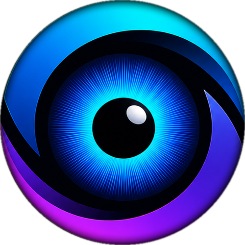

Dynamic PC Command CentreTurn your PC into a command centre.
Iris is a context-aware control and automation utility that automatically organizes your workspace. Every screenshot, quick note, color sample, and OCR text clip is instantly tagged and filed under the active game or application you took it in — zero folder sorting, zero file dialogs, and no Alt-Tabbing required.
Everything under one roof — automatically organized
Iris is a dynamic control-and-automation utility that senses what you're doing. Every tool automatically attributes its work to your active game or program so you never have to file anything manually.
Automatic App-Linked Library
Stop digging through generic screenshot folders and lost text files. Iris detects which game or app is in focus and automatically files all notes, screenshots, and OCR clips under that specific title.
Foreground-Locked Iris Note
Summons a persistent, ultra-fast floating note directly above 3D games with immediate keyboard focus and zero frame drops — filed to your active session automatically.
Capture Toolbar + Annotations
A transient screen-capture toolbar — fullscreen or zone screenshots with pixel annotations. OCR runs on every capture automatically, and everything is filed into your app's library shelf.
Capture Text (OCR to Clipboard)
A standalone OCR feature that grabs text from any screen region and copies it straight to your clipboard — no screenshot needed.
Color Picker
A system-wide color picker with precision pixel grab and instant clipboard HEX/RGB — collected alongside your project captures in the integrated library.
Media Mixing & App Volume
Full media transport controls plus per-application volume mixing — adjust or mute the currently active game or app's volume without Alt-Tabbing.
Live PC Statistics
CPU/GPU temperature and FPS, with FPS read live from RTSS. Stream to the optional MAX7219 matrix display, the floating overlay, or your phone panel.
Game & App Button Boxes
Display custom button boxes inside simulators, games, or apps — with per-game actions, hotkeys, and reactive telemetry.
Control & Automate Lighting
Drive RGB and smart-home lighting from buttons, OpenRGB presets, and reactive automations (e.g. lighting turns red when combat begins).
Vision System
Screen-analysis sensors watch a region and fire events on colour conditions — colour percentage, pixel match, or average brightness.
Conditional Macros & Hotkeys
A macro system with hotkey injection and reactive events. Trigger actions when a condition is true — e.g. switch lighting or inject commands on state changes.
Home Assistant & Plugins
Control lights, scenes, and switches; extend with addons and plugins for smart home devices, peripheral lighting, game telemetry, and hardware stats.
Alarm, Stopwatch & Countdown
Set alarms from your PC and dismiss or snooze from the panel — plus an on-screen stopwatch and countdown timer overlay.
Built for zero-effort organization
See how Iris transforms everyday capture, note-taking, and control compared to standard desktop tools.
| Task | Typical Desktop Workflow | With Iris |
|---|---|---|
| In-Game / App Screenshot | Snipping tool dumps into a massive generic folder with timestamp filenames. | Captured, OCR'd, and filed into that specific game or app's library shelf automatically. |
| Quick In-Game Note | Alt-Tab to a text editor, lose 3D fullscreen focus, manually name and save a file. | One hotkey summons a floating note above your game with instant focus; auto-saved and linked to that title. |
| Grabbing On-Screen Text | Manually re-type long coordinates, seeds, or system names off the display. | Drag a box to extract text directly to your clipboard and app history via Windows OCR. |
| Audio & Macro Controls | Fumble with Windows volume mixer or separate peripheral utilities. | Per-app audio sliders and reactive macro decks switch profiles automatically as you swap games or apps. |
What you'll need
Iris runs on an ESP8266/ESP32 plus a MAX7219 LED matrix, connected over USB serial.
Display
MAX7219 LED matrix, FC16_HW type — 4 daisy-chained 8×8 modules.
Microcontroller
ESP8266 (Wemos D1 Mini) or ESP32, flashed with the bundled firmware.
PC
Windows 10/11 with Python 3.10+ running the Iris desktop app.
An integrated command system
Iris is a full utility stack — desktop app, capture & library tools, macro engine, hardware display, and a control panel.
Desktop App
Python app with a system tray, floating overlay, and all the data plumbing.
Phone Panel / PWA
A web panel (installable as a PWA) for pairing and controlling Iris from your phone.
Android App
A native Android companion in android/ for companion-device use.
Library Browser
One integrated browser for every screenshot, OCR text, and note — grouped per app, searchable from the panel.
Plugin System
Extensible plugins for game telemetry, OpenRGB, Home Assistant, PC stats, lighting, and vision sensors.
Macro & Automation Engine
Conditional macros, hotkey injection, and reactive events that fire actions (lighting, hotkeys, notifications) based on live state.
Ready to build yours?
Follow the step-by-step setup guide covering control & capture tools, macros, plugins, hardware, the Python app, and every component.
Open the Setup Guide